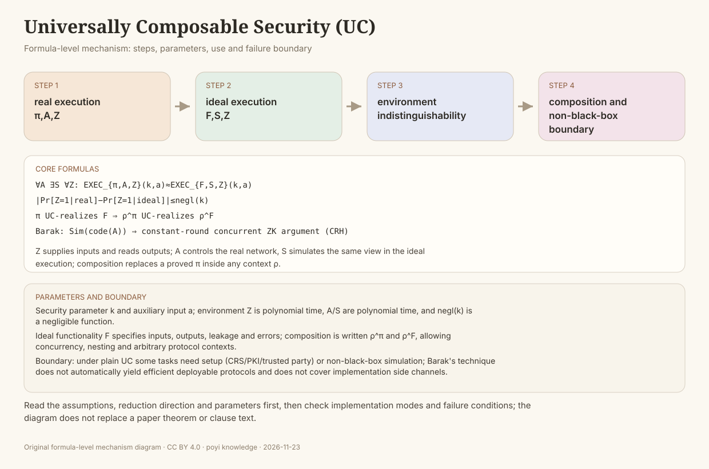
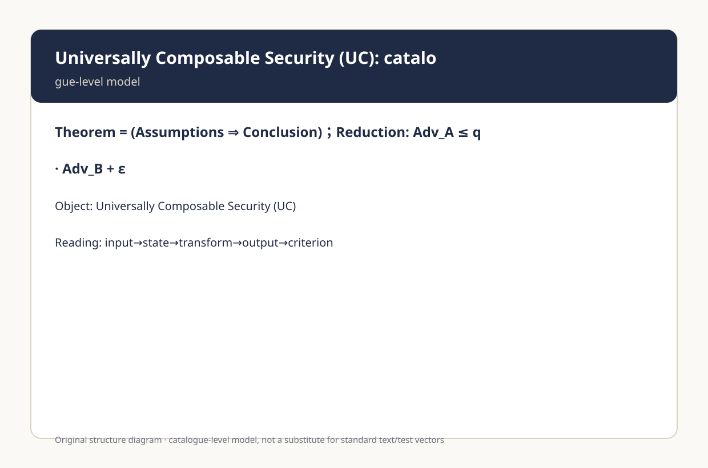

Principles
Theorem: Universally Composable Security (UC) (可组合安全框架（UC）). ### Real and ideal executions
Let EXEC_{π,A,Z}(k,a) be the execution of protocol π with environment Z and adversary A, and EXEC_{F,S,Z}(k,a) the execution of ideal functionality F with simulator S. UC security (UC-emulation) requires:
∀A ∃S ∀Z: EXEC_{π,A,Z}(k,a)≈EXEC_{F,S,Z}(k,a),
equivalently, the environment's distinguishing advantage satisfies
|Pr[Z=1|real]−Pr[Z=1|ideal]|≤negl(k). ### Composition theorem
If π UC-realizes F, then for every protocol context ρ, ρ^π UC-realizes ρ^F. A proved component can be replaced inside any system while preserving the ideal specification; composition allows concurrent, nested and arbitrary protocol instances. ### Non-black-box boundary
Barak 2001 gives the adversary's code to the simulator as auxiliary input and constructs a non-black-box simulator; under collision-resistant hashing this yields a constant-round NP argument that remains zero-knowledge under n concurrent sessions. This shows that simulation need not treat A as a black box, but the technique is not automatically an efficient construction for every UC task.

Why it matters
UC writes security as indistinguishability from an ideal functionality in every environment. This is stronger than “no adversary wins a particular game”: the protocol must not leak extra information when called concurrently, nested, or composed with other protocols. The ideal functionality F is the specification, and simulator S accounts for everything the real protocol may leak.
This is a framework and composition theorem, not a concrete cipher. It unifies MPC, key exchange and commitments under the real/ideal paradigm; Barak's non-black-box simulation is one boundary of simulator technique, not the UC definition itself.
Applications
- Write the specification: define F's inputs, outputs, leakage and error behaviour before discussing a protocol. 2. Prove simulation: for every A construct S so that no Z distinguishes real from ideal; do not prove only an isolated game. 3. Use composition: prove π realizes F, then replace it inside context ρ; check setup, joint state and concurrency assumptions. 4. State boundaries: identify the corruption model, whether the environment is non-uniform, and whether CRS/PKI/trusted parties are required.
Do not treat the UC label as an unconditional security proof; do not claim every task is realizable in plain UC without setup; do not present Barak's non-black-box simulation as a general efficiency recipe; do not ignore implementation side channels.
A shared name may belong to an algorithm, standard, event, person or term; this entry is responsible only for its catalogue binding and does not absorb adjacent records. If versions, regions or institutions define the name differently, the differences stay side by side.

Limits & attacks
- Setup assumptions: many tasks need a CRS, PKI, trusted party or global setup in plain UC; omitting setup invalidates the composition theorem's premises. 2. Simulator limits: black-box simulation is not universal; Barak's non-black-box simulation depends on the adversary's code and CRH, and may be inefficient or hard to audit. 3. Corruption and environment: adaptive corruption, environment auxiliary input, non-uniform adversaries, joint state and global subroutines all change the definition and proof. 4. Implementation: a UC proof does not cover side channels, fault injection, code bugs or deployment configuration; this entry is not implementation certification.
History
Canetti introduced the UC framework and universal composition in ePrint 2000/067 (FOCS 2001), writing protocol security as real/ideal indistinguishability in every environment and proving a composition theorem. Barak 2001 at FOCS introduced non-black-box simulation, breaking the black-box simulation barrier and constructing a constant-round concurrent zero-knowledge argument.
The 2020 revision of ePrint 2000/067 explicitly states that definitional and result details changed from earlier versions; this entry follows that revision's framework and does not treat early-version lemmas as the current definition.
Worked example & verification
Formal model and reproduction steps
[\Pr[\mathrm{Bad}_A(\lambda)]\le \varepsilon(\lambda)]
Universally Composable Security (UC): the registered public parameters, key material or randomness, and message are mapped through the stated transformation to an output checked against the registered criterion. The worked example is a structural reproduction, not a new test vector; parameter ranges, standard versions and implementation details remain source-bound.
References
- Wikipedia search entry for 可组合安全框架（UC）. https://zh.wikipedia.org/w/index.php?search=%E5%8F%AF%E7%BB%84%E5%90%88%E5%AE%89%E5%85%A8%E6%A1%86%E6%9E%B6%EF%BC%88UC%EF%BC%89
- Handbook of Applied Cryptography (Menezes, van Oorschot, Vanstone). https://www.cacr.math.uwaterloo.ca/hac/